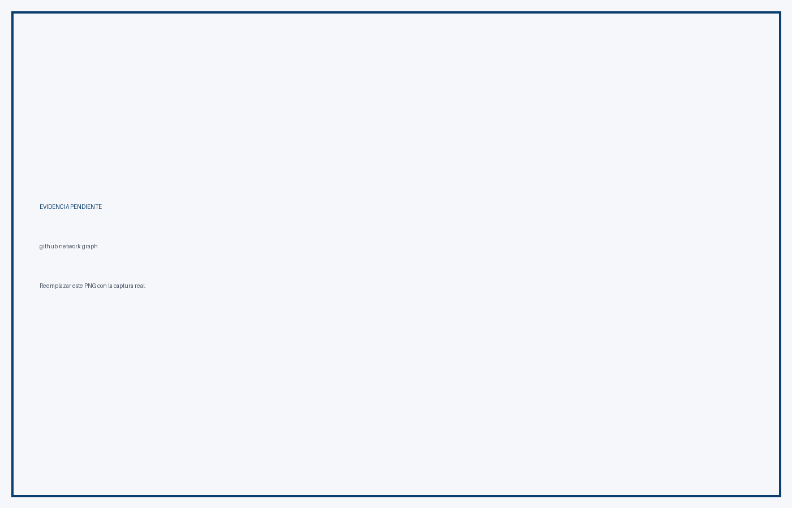
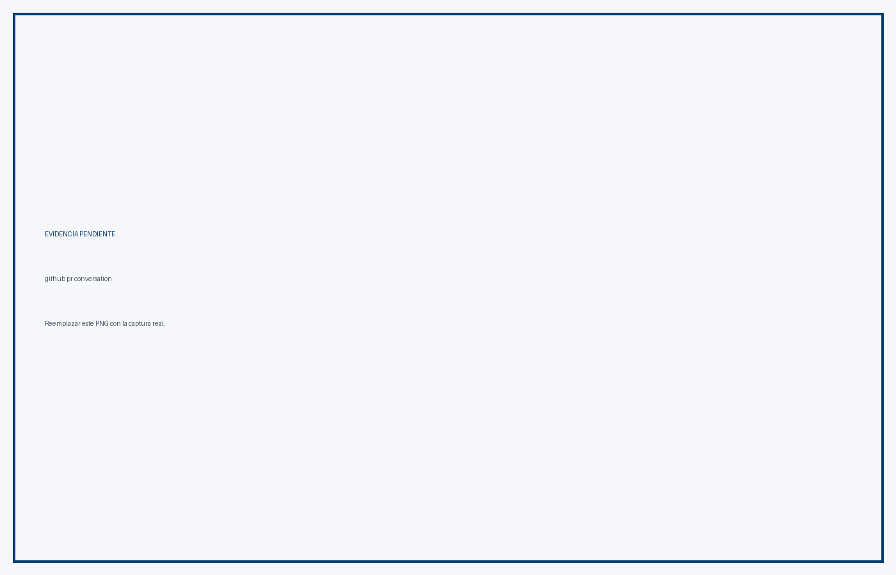
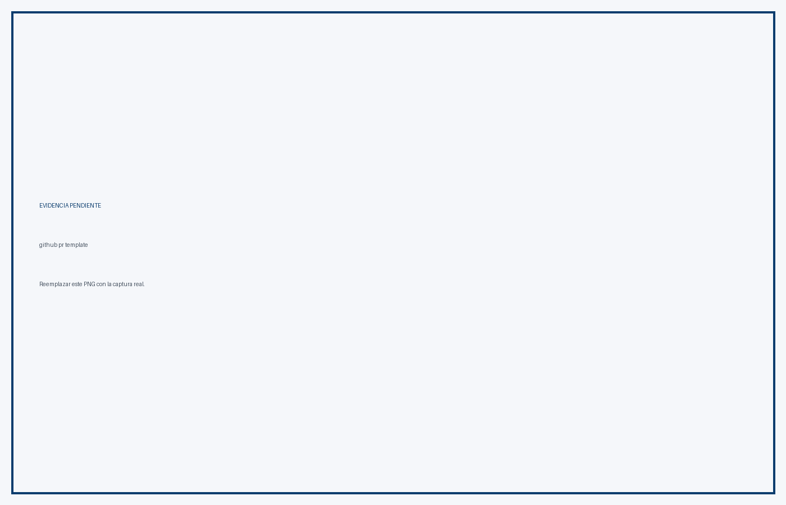

Proyecto: CircleGuard
Rama: feat/HU-GATEWAY-01-configurar-servidores
Estrategia: GitHub Flow
Fecha: 8 de noviembre de 2026
CircleGuard aplica GitHub Flow:
main siempre está en estado desplegable.main y es de corta duración.La estrategia está documentada en BRANCHING-STRATEGY.md.
Rama actual: feat/HU-GATEWAY-01-configurar-servidores
Base: main
Sincronización: merge de main sobre la rama
PR: pendiente de crear
Aprobación: pendiente
Checks Jenkins: pendientes
La rama dev es heredada y no forma parte de GitHub Flow. Se eliminará antes de la entrega.





| Criterio | Evidencia | Estado |
|---|---|---|
| Tablero vivo | Capturas Jira | Pendiente de subir |
| Historias con criterios medibles | Capturas Jira | Pendiente de subir |
| Sprint 0 y Sprint 1 | Capturas Jira | Pendiente de subir |
| Review y retrospectiva | Capturas Jira | Pendiente de subir |
| Ramas protegidas | Ruleset de main | Pendiente de captura |
| PR revisados por pares | PR con aprobación | Pendiente de crear |
| Estrategia de branching | BRANCHING-STRATEGY.md |
Cumple |
Reemplazar los PNG de ejemplo en:
docs/informe/evidencia/github/
docs/informe/evidencia/jira/
Nombres esperados:
github-branches.png
github-network-graph.png
github-ruleset-main.png
github-pr-conversation.png
github-pr-approval.png
github-pr-checks.png
github-commit-history.png
github-pr-template.png
jira-sprint-0.png
jira-sprint-1.png
jira-backlog.png
jira-historias.png
jira-retrospectiva.png
GitHub Flow está definido y la rama actual sigue la convención de nombres y commits. Para cerrar P1.1 falta crear el PR, obtener la aprobación, verificar los checks, hacer Squash and Merge y reemplazar las capturas de ejemplo con las evidencias reales de GitHub y Jira.